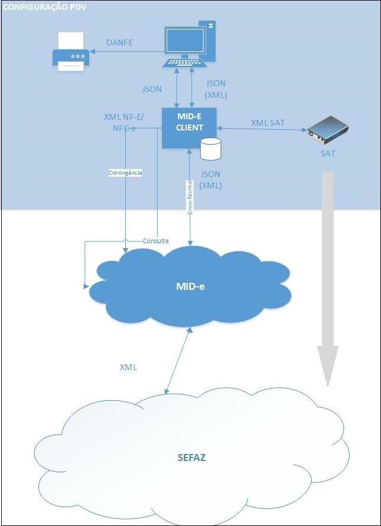
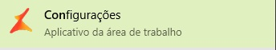

Mid-e Client
Na Linx, o middleware desenvolvido é o MID-e Central, responsável pela mediação entre MID-e Client e a SEFAZ/SAT. É responsável pelo envio e recebimento de informações entre os sistemas de diferentes protocolos, plataformas e sistemas operacionais.
Já o MID-e Client, é responsável pela mediação das informações entre o PDV e o MID-e Central. Para o Estado de São Paulo, o MID-e Client também será responsável pela mediação das informações entre o PDV e o aparelho SAT, além de encaminhar os cupons autorizados pelo SAT para guarda no MID-e Central.
Para mais informações, acesse o site da Secretaria da Fazenda de São Paulo
Entenda o processo:
Erros e Dúvidas frequentes:
Ao acessar o LinxPOS ou LinxPOS Manager o sistema apresenta a seguinte mensagem:

Nesses casos o problema ocorre pois o serviço do Mid-e Client está travado ou não está se comunicando com o sistema (LinxPOS e LinxPOS Manager).
Correção:
Será necessário reiniciar o serviço do Mid-e Client.
- Na barra de tarefas e na área de trabalho do terminal de venda temos o Icone do Mid-e Client com o nome de Configurações (Clique duas vezes para acessar)
- Irá abrir a tela:
 Clique no botão Parar Serviço
Clique no botão Parar Serviço - Em seguida Clique no botão ao lado do CNPJ

- Com isso a janela habilitará o botão Iniciar Serviço
 Clique no botão Iniciar Serviço
Clique no botão Iniciar Serviço - Após todo o processo o Mid-e estará com o Serviço inicializado!

Feche a janela, inicie o LinxPOS ou LinxPOS Manager, a mensagem de Erro de comunicação não deve aparecer novamente.